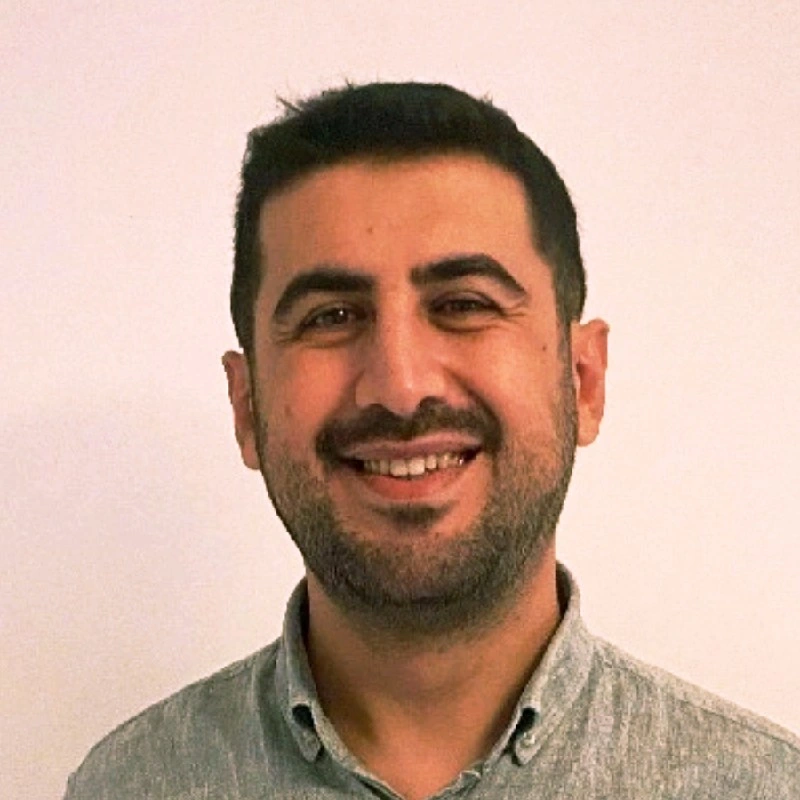

Mülkiye'yi bitirdi, İzmir'de iç denetçi. Çoğunlukla huysuzlanır, bazen üretir bazen de yazar.
// hakkımda

Cemal Süreya'nın öldüğü gün doğdum. Mülkiye'yi bitirdim. Diplomat olmayı beklerken muhasebeci oldum. Ernst & Young'da çalışmaya başladım, reel sektörde devam ettim. Şu an Medical Point Hastaneler Grubu'nda çalışıyorum. Tüm bu süreçte hep Elif vardı. Sonra bir de Bilbo eklendi.
Zaman zaman yazıyorum. Denetim mesleki literatürü hakkında değil, daha çok değişen çalışma hayatı ve yapay zeka hakkında. Ama bu sözüme sadık kalacak değilim.
// deneyim
// eğitim
// sertifikalar
// araçlar
KOBİ ölçeğindeki iç denetim birimlerinin bulgu takibini, risk kaydını ve etik ihbar sürecini yönetebilmesi için yazdım. Satılık değil; kodları GitHub'da, isteyen kurar, isteyen değiştirir.
// yazılar
Yapay zekayla kaba bir ilişkimiz var. "Daha iyi yaz", "derin düşün", "daha da derin düşün"... Bir denetçinin YZ kılavuzu değil, itirafı.
Oku →Graeber'ın "Bullshit Jobs" kitabından hareketle: ne kadar topluma faydalı iş yapılıyorsa o kadar değersiz, ne kadar faydasızsa o kadar prestijli. Neden?
Oku →Her sonbaharda Wyndham'da açan lacivert çiçekler, güzel atıştırmalıklar ve sormak gerekir mi diye düşündüğümüz sorular.
Oku →// iletişim
Bir sorunuz varsa, RedZone'la ilgili bir geri bildiriminiz varsa ya da sadece konuşmak istiyorsanız yazabilirsiniz.